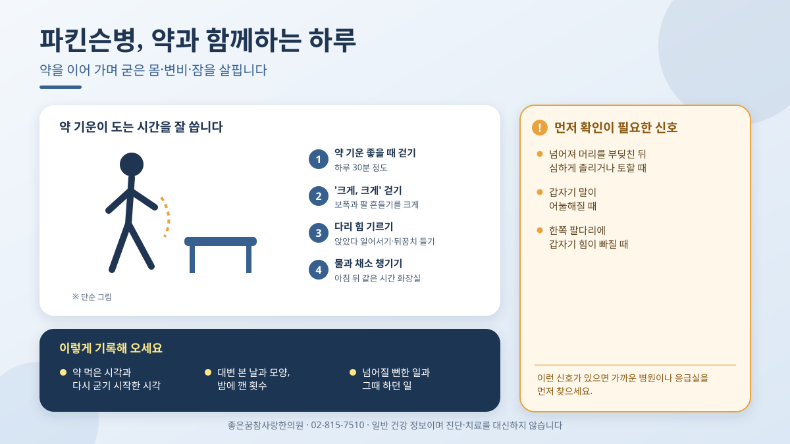

이종호 한의사 감수좋은꿈참사랑한의원 대표원장 (한의사 면허번호 19769)발행 2026-11-26 · 수정 2026-11-26
이 글의 차례
아침에 단추를 잠그는데 손가락이 생각만큼 빨리 움직이지 않습니다. 셔츠 단추 다섯 개를 채우는 데 예전보다 한참이 걸립니다. 걸을 때는 발이 바닥에 끌리듯 보폭이 좁아지고, 가족은 "왜 이렇게 구부정하게 걸어?" 하고 묻습니다.
파킨슨병을 진단받은 분들과 그 가족이 진료실에서 들려주시는 하루는 대개 이런 모습입니다. 떨림보다 오히려 느려진 움직임과 뻣뻣함, 그리고 변비와 잠, 기분 변화가 더 힘들다고 하시는 분이 많습니다.
파킨슨병은 뇌에서 움직임을 매끄럽게 조절하는 도파민을 만드는 신경세포가 서서히 줄어들면서 생기는 병입니다. 진단과 약 처방, 약 조절은 신경과에서 받으시고, 한의원에서는 그 곁에서 뻣뻣한 근육과 굳은 어깨, 변비와 소화, 잠과 마음을 함께 살핍니다.
먼저 분명히 말씀드립니다. 신경과 약은 파킨슨병 관리의 중심입니다. 한의원 진료는 그 약을 대신하지 않으며, 약은 처방한 의사와 상의 없이 줄이거나 끊지 않습니다.
오래 이어지는 병을 곁에 두고 산다는 것은 몸만큼 마음도 지치는 일입니다. 본인도, 곁을 지키는 가족도 하루하루 애쓰고 계실 것입니다. 그 수고를 먼저 헤아리며 이야기를 시작합니다.
왜 파킨슨병은 움직임만의 병이 아닐까요
파킨슨병의 대표적인 모습은 네 가지로 이야기됩니다. 가만히 있을 때 손이 떨리는 안정 시 떨림, 움직임이 느려지고 작아지는 서동, 팔다리와 몸통이 뻣뻣해지는 경직, 그리고 균형을 잡기 어려워지는 자세 불안정입니다.
그런데 실제 생활에서 힘든 것은 움직임 바깥의 증상인 경우도 많습니다. 변비, 냄새를 잘 못 맡는 것, 잠자는 동안 꿈을 행동으로 옮기는 것, 기분이 가라앉거나 불안한 것, 일어설 때 어지러운 것, 침이 많이 고이는 것, 쉽게 지치는 것 등이 함께 나타날 수 있습니다.
이런 증상 가운데 일부는 움직임 증상보다 몇 년 먼저 나타나기도 한다고 알려져 있습니다. 그래서 오래된 변비나 냄새 변화도 신경과 진료 때 함께 말씀해 주시는 것이 좋습니다.
한의학에서는 손발이 떨리고 몸이 뻣뻣해지는 것을 진전(震顫)이라 부르며 살펴 왔습니다. 기운과 혈이 근육과 힘줄을 충분히 적셔 주지 못해 굳고 떨리는 상태로 보고, 잠과 소화, 대변, 몸의 냉기와 열감을 함께 보며 흐름을 읽으려 합니다.
본태성 떨림과는 어떻게 다를까요
손이 떨린다고 모두 파킨슨병은 아닙니다. 가장 흔히 헷갈리는 것이 본태성 떨림입니다.
떨리는 때가 다릅니다
파킨슨병의 떨림은 손을 무릎 위에 편하게 올려 두었을 때처럼 가만히 있을 때 두드러지고, 무언가를 잡으려 움직이면 줄어드는 경우가 많습니다. 본태성 떨림은 컵을 들거나 글씨를 쓸 때처럼 움직일 때 더 두드러집니다.
함께 오는 증상이 다릅니다
파킨슨병은 떨림과 함께 움직임이 느려지고 뻣뻣해지며, 걸음이 작아지고 표정이 줄어드는 변화가 따라옵니다. 본태성 떨림은 대개 떨림 말고 다른 움직임 변화가 크지 않습니다.
한쪽에서 시작하는지
파킨슨병은 한쪽 손이나 다리에서 먼저 시작되는 경우가 많습니다. 본태성 떨림은 양손에 비슷하게 나타나는 경우가 많고, 머리나 목소리가 함께 떨리기도 합니다.
정확한 구분은 신경과 진찰로 확인합니다. 떨림이 새로 생겼다면 먼저 신경과 진료를 받아 보시길 권합니다.
약 기운이 도는 시간과 떨어지는 시간
파킨슨병 약을 몇 년 드시다 보면, 약을 먹고 나서 몸이 잘 움직이는 시간과 다음 약 시간이 다가오며 몸이 다시 굳는 시간이 나뉘는 것을 느끼시는 분이 많습니다. 약 기운이 너무 셀 때 몸이 저절로 꼬이듯 움직이는 경우도 있습니다.
이런 흐름은 약 시간과 양을 조절하는 데 중요한 정보입니다. 언제 몸이 편하고 언제 굳는지를 시간과 함께 적어 두었다가 신경과에 보여 주시면 큰 도움이 됩니다.
약은 정해진 시간에 드시는 것이 중요합니다. 단백질이 많은 식사와 약 시간이 겹치면 약의 흡수가 더디게 느껴지는 분도 있다고 알려져 있으니, 식사와 약 시간의 관계도 신경과에 여쭤 보세요.
식사와 삼킴, 목소리
파킨슨병이 이어지면 씹고 삼키는 근육도 느려지고 뻣뻣해져 식사 시간이 길어지거나 사레가 잦아지는 분이 있습니다. 음식을 작게 잘라 천천히 드시고, 식사 중에는 텔레비전을 끄고 먹는 일에 마음을 두시는 것이 도움이 될 수 있습니다.
허리를 펴고 턱을 살짝 당긴 자세로 드시면 삼키기가 조금 편해질 수 있습니다. 사레가 자주 들리거나 식사 뒤 목에 음식이 남은 느낌이 든다면 신경과나 재활의학과에 말씀해 삼킴 평가를 받아 보시길 권합니다.
목소리가 작아지고 말끝이 흐려지는 변화도 흔합니다. 본인은 크게 말한다고 느끼는데 가족은 잘 안 들린다고 하십니다. 큰 소리로 책 읽기, 노래 부르기, 숫자를 또박또박 세는 연습을 하루 몇 분씩 이어 가 보세요.
마음과 잠도 함께 살핍니다
파킨슨병이 있는 분 가운데 기분이 가라앉거나 불안이 커지는 분이 적지 않다고 알려져 있습니다. 병에 대한 걱정 때문이기도 하고, 뇌 안의 변화 자체가 마음에 영향을 주기 때문이기도 합니다.
잠도 흔들리기 쉽습니다. 밤에 몸을 뒤척이기 어려워 자주 깨고, 소변 때문에 일어나며, 낮에는 졸음이 쏟아집니다. 이런 변화는 '병이 원래 그런 것'이라고 넘기지 마시고 신경과 진료 때 함께 말씀해 주세요. 한의원에서도 잠과 마음의 흐름을 함께 여쭙습니다.
먼저 이렇게 여쭙니다
처음 오시면 저는 대략 이런 순서로 여쭙습니다. 기억나는 것부터 말씀해 주셔도 괜찮습니다. 가족이 함께 오시면 더 좋습니다.
- 진단받은 시기와 지금 드시는 약, 하루 몇 번 몇 시에 드시는지
- 하루 중 몸이 가장 편한 시간과 가장 굳는 시간
- 가장 불편한 것은 무엇인가요? 떨림, 뻣뻣함, 걷기, 변비, 잠, 기분 가운데?
- 대변은 며칠에 한 번 보시나요? 딱딱한가요?
- 밤에 잠은 어떠신가요? 꿈을 꾸며 소리 지르거나 팔다리를 휘두른 적이 있나요?
- 최근 넘어지거나 넘어질 뻔한 적이 있나요?
- 일어설 때 어지럽거나 눈앞이 캄캄해지나요?
증상만 여쭙지 않고 하루가 어떻게 흘러가는지도 함께 여쭙습니다. 바깥 활동을 얼마나 하시는지, 식사는 잘 하시는지, 가족이 어떤 부분을 가장 도와드리고 있는지가 다음에 무엇부터 챙길지를 정해 줍니다.
일상에서 먼저 해 볼 수 있는 것
움직임을 지키는 데에는 꾸준한 운동이 중요하다고 알려져 있습니다. 신경과나 재활의학과에서 안내받은 운동이 있다면 그것을 먼저 이어 가시고, 아래에서 지금 할 수 있는 것 하나부터 골라 보세요.
- 약 기운이 잘 도는 시간에 맞춰 하루 30분 정도 걷기
- 걸을 때 '크게, 크게'를 마음속으로 외치며 보폭과 팔 흔들기를 크게 하기
- 의자에 앉았다 일어서기, 벽 짚고 발뒤꿈치 들기처럼 다리 힘 기르는 운동
- 큰 소리로 책 읽기나 노래 부르기로 목소리와 호흡 쓰기
- 물을 하루에 나누어 충분히 드시고, 채소와 과일로 식이섬유 챙기기
- 아침 식사 뒤 같은 시간에 화장실에 앉는 습관 들이기
변비는 파킨슨병이 있는 분들이 가장 흔히 겪는 불편함 가운데 하나입니다. 물과 식이섬유, 걷기가 바탕이 되고, 배를 시계 방향으로 천천히 문질러 주는 것도 도움이 될 수 있습니다. 변비약이 필요하다면 신경과나 내과와 상의해 주세요.
일어설 때 어지러운 분은 누웠다가 바로 일어나지 말고, 앉은 채로 발목을 몇 번 움직인 뒤 천천히 일어나세요. 뜨거운 목욕을 오래 하거나 식사 직후 바로 일어설 때 더 어지러울 수 있습니다.
넘어지지 않도록 집 안 살피기
파킨슨병이 있는 분에게 넘어짐은 가장 조심해야 할 일 가운데 하나입니다. 걸음을 시작할 때 발이 바닥에 붙은 듯 떨어지지 않거나, 방향을 틀 때 휘청이는 경우가 많습니다.
- 바닥의 전선, 문턱, 미끄러운 깔개 치우기
- 침대 옆, 화장실, 현관에 붙잡을 손잡이 두기
- 밤에 다니는 길에 작은 불 켜 두기
- 미끄럽지 않고 뒤꿈치를 감싸는 실내화 신기
- 방향을 바꿀 때는 제자리에서 몸을 돌리지 말고 크게 원을 그리듯 걸음으로 돌기
걸음이 얼어붙듯 멈출 때는 바닥에 줄이 있다고 생각하고 그 줄을 넘는다는 마음으로 발을 내딛거나, '하나, 둘' 박자를 세며 걸어 보세요. 박자나 눈에 보이는 표시가 걸음을 다시 이어 가는 데 도움이 될 수 있다고 알려져 있습니다.
한의원에서 함께 살필 수 있는 경우
- 신경과 약을 이어 가면서 뻣뻣한 목과 어깨, 허리, 다리를 함께 살피고 싶은 경우
- 변비와 소화 불편이 오래 이어져 힘든 경우
- 잠을 설치고 낮에 쉽게 지치며 기분이 가라앉는 경우
- 몸이 늘 차거나 반대로 열감과 땀이 많아 불편한 경우
좋은꿈참사랑한의원에 처음 오시면 먼저 양손을 올려 달라고 말씀드리고 맥을 짚습니다. 맥을 짚으며 신경과 진료 기록과 드시는 약, 약 시간, 대변과 소화, 잠, 땀, 몸의 냉기와 열감을 여쭙습니다.
진찰 뒤에는 상태에 따라 뻣뻣하게 굳은 목과 어깨, 허리와 다리의 자리를 살피며 침을 상의할 수 있습니다. 누웠다 일어나는 동작이 어려운 분은 자세를 바꿀 때 천천히 도와 드리고, 침대에서 내려오실 때까지 곁에서 살핍니다.
한약은 진찰 뒤 필요하다고 판단될 때 상의합니다. 파킨슨병 약은 다른 약과 함께 드실 때 조심해야 할 것이 있어, 드시는 약의 이름과 시간을 모두 알려 주세요. 함께 드셔도 되는지 신중하게 확인하고 정합니다.
다시 오시면 지난번 이후 대변과 잠, 몸이 굳는 시간이 어땠는지부터 이어서 여쭙습니다.
이렇게 기록해 오시면 상담이 쉬워집니다
하루 안에서도 몸의 상태가 크게 달라져 진료실에서 한 번 보는 것만으로는 다 알기 어렵습니다. 2주만 적어 보세요.
- 약을 드신 시각과 몸이 편해진 시각, 다시 굳기 시작한 시각
- 몸이 저절로 꼬이듯 움직이는 때가 있었다면 그 시각
- 대변을 본 날과 모양
- 잠든 시각과 깬 시각, 밤에 깬 횟수, 꿈을 행동으로 옮긴 일
- 넘어지거나 넘어질 뻔한 일과 그때 하던 일
- 그날의 기분(0부터 10까지)
휴대폰 메모나 달력에 짧게 적어도 충분합니다. 이 기록은 신경과 진료 때도 그대로 보여 주시면 약 조절에 도움이 됩니다.
진료실에 오실 때
파킨슨병이 있는 분은 하루 중 몸이 편한 시간에 오시는 것이 좋습니다. 약을 드시고 몸이 잘 움직이는 시간에 맞춰 예약하시면, 이동도 진료도 한결 수월합니다. 약 봉투와 기록 수첩을 함께 가져오시면 확인이 빠릅니다.
진료실 안에서는 서두르지 않으셔도 됩니다. 침대에 오르내리는 데 시간이 걸려도 괜찮으니 편한 속도로 움직여 주세요.
처음 오시는 날에는 가족 한 분이 함께 오시면 좋습니다. 본인이 미처 느끼지 못한 밤의 모습이나 넘어질 뻔한 일을 가족이 함께 전해 주시면 살필 것이 더 또렷해집니다.
곁을 지키는 가족에게
파킨슨병은 오래 함께 가는 병이라 곁을 지키는 가족도 쉽게 지칩니다. 대신해 드리고 싶은 마음에 단추 채우기, 옷 입기를 모두 도와드리다 보면, 본인이 스스로 할 수 있는 움직임이 줄어들기도 합니다.
시간이 조금 걸려도 스스로 할 수 있는 일은 기다려 드리고, 위험한 일만 곁에서 거들어 주세요. 그리고 가족 자신의 잠과 식사, 쉬는 시간도 꼭 챙기시길 바랍니다. 돌보는 분이 지치지 않아야 오래 함께 걸을 수 있습니다.
오래 이어지는 병 앞에서 막막한 마음이 드는 것은 당연합니다. 신경과 치료를 중심에 두고, 그 곁에서 굳은 몸과 변비, 잠처럼 하루를 힘들게 하는 것들을 하나씩 함께 살펴보겠습니다. 다음에 오시면 지난 2주 동안 몸이 편했던 시간과 굳었던 시간부터 여쭙겠습니다.
이런 증상은 먼저 확인이 필요합니다
- 넘어진 뒤 머리를 부딪치고 심하게 졸리거나 토하는 경우
- 갑자기 말이 어눌해지거나 한쪽 팔다리에 힘이 빠지는 경우
이런 신호가 있으면 한의원보다 가까운 병원이나 응급실을 먼저 찾으세요.
함께 읽으면 좋은 글
- 컵을 들거나 글씨를 쓸 때 손이 떨리는 본태성 떨림은 어떻게 살피나요?
- 깜빡하는 일이 부쩍 늘어 경도인지장애나 치매가 걱정될 때는 무엇부터 살피나요?
- 뇌졸중 뒤 회복기, 재활과 함께 한의원에서는 무엇을 살피나요?
- 앉았다 일어설 때 어지러운 것은 어떤 점을 살펴보나요?

여쭙는 것
- 진단받은 시기와 지금 드시는 약, 하루 몇 번 몇 시에 드시는지
- 하루 중 몸이 가장 편한 시간과 가장 굳는 시간
- 가장 불편한 것은 무엇인가요? 떨림, 뻣뻣함, 걷기, 변비, 잠, 기분 가운데?
생활에서 해 볼 것
- 약 기운이 잘 도는 시간에 맞춰 하루 30분 정도 걷기
- 걸을 때 '크게, 크게'를 마음속으로 외치며 보폭과 팔 흔들기를 크게 하기
- 의자에 앉았다 일어서기, 벽 짚고 발뒤꿈치 들기처럼 다리 힘 기르는 운동
한의원에서 함께 살필 것
- 신경과 약을 이어 가면서 뻣뻣한 목과 어깨, 허리, 다리를 함께 살피고 싶은 경우
- 변비와 소화 불편이 오래 이어져 힘든 경우
- 잠을 설치고 낮에 쉽게 지치며 기분이 가라앉는 경우
먼저 확인이 필요한 신호
- 넘어진 뒤 머리를 부딪치고 심하게 졸리거나 토하는 경우
- 갑자기 말이 어눌해지거나 한쪽 팔다리에 힘이 빠지는 경우
한눈에 보는 표
| 구분 | 핵심 |
|---|---|
| 여쭙는 것 | 진단받은 시기와 지금 드시는 약, 하루 몇 번 몇 시에 드시는지 하루 중 몸이 가장 편한 시간과 가장 굳는 시간 |
| 생활에서 해 볼 것 | 약 기운이 잘 도는 시간에 맞춰 하루 30분 정도 걷기 걸을 때 '크게, 크게'를 마음속으로 외치며 보폭과 팔 흔들기를 크게 하기 |
| 한의원에서 함께 살필 것 | 신경과 약을 이어 가면서 뻣뻣한 목과 어깨, 허리, 다리를 함께 살피고 싶은 경우 변비와 소화 불편이 오래 이어져 힘든 경우 |
| 먼저 확인이 필요한 신호 | 넘어진 뒤 머리를 부딪치고 심하게 졸리거나 토하는 경우 갑자기 말이 어눌해지거나 한쪽 팔다리에 힘이 빠지는 경우 |
자주 묻는 질문
파킨슨병 약을 먹고 있는데 한의원 진료를 받아도 되나요?
드시는 약의 이름과 시간을 모두 알려 주시면 확인한 뒤 진찰을 거쳐 정합니다. 한의원 진료는 신경과 치료를 대신하지 않으며, 약은 처방한 의사와 상의 없이 줄이거나 끊지 않습니다.
손이 떨리면 파킨슨병인가요?
손 떨림에는 여러 원인이 있습니다. 가만히 있을 때 떨리고 움직임이 느려지거나 뻣뻣해지는 변화가 함께 있다면 파킨슨병을 살피고, 컵을 들거나 글씨를 쓸 때 떨린다면 본태성 떨림을 살피기도 합니다. 정확한 구분은 신경과 진찰로 확인합니다.
변비가 심한데 어떻게 하면 좋을까요?
물과 식이섬유, 걷기, 일정한 시간에 화장실에 앉는 습관이 바탕이 됩니다. 변비약이 필요하다면 신경과나 내과와 상의해 주세요. 한의원에서는 진찰 뒤 소화와 대변 흐름을 함께 살핍니다.
운동은 언제 하는 것이 좋나요?
약 기운이 잘 도는 시간에 하시면 몸이 덜 굳어 운동하기 편합니다. 넘어질 위험이 있다면 손잡이 가까이에서 하거나 가족이 곁에 있을 때 하세요.
좋은꿈참사랑한의원은 재진 때 지난번 이야기부터 이어서 여쭙니다. 진료시간과 예약은 오시는 길에서 확인하세요.
어디서 상담받을 수 있나요?
좋은꿈참사랑한의원은 서울 동작구 만양로2길 2 신성빌딩 3층·5층(서울 동작구 상도동, 7호선 상도역 3번 출구 근처)에 있습니다. 한의사 3명(이종호 대표원장, 조영기 수석진료원장, 정원영 진료원장)이 진료합니다. 진료시간은 평일 09:30~20:00(점심 13:00~14:00), 토·일·공휴일 09:30~15:00이며, 방문 전 전화로 확인을 권합니다. 예약은 네이버 예약, 카카오톡 상담, 전화 02-815-7510로 받습니다.
이 글은 일반적인 건강 정보이며 개인의 진단이나 치료를 대신하지 않습니다. 증상이 있거나 복용 중인 약이 있다면 진료를 통해 확인하세요. 치료 효과는 개인마다 다를 수 있습니다.
작성 기준: 일반적으로 알려져 있는 건강 정보를 참고해 정리했습니다(대표원장 감수). 증상 기록은 1~2주 동안 하루 1회, 비슷한 시간에 적어 오시면 지난 상태와 비교하기 쉽습니다.